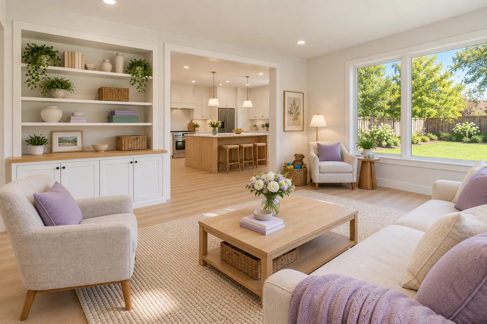

01 / AdditionsAsk about this project
Family Room Additions
A bigger place to gather, usually off the kitchen and opening to the yard. We tie the new roof and floor into the house so the room feels like it was always there.
Helpful to have ready
How your family uses the house now, and what feels crowded.
What we’ll go over
Where the addition can go on your lot, setbacks and HOA rules, and how it changes the rooms next to it.